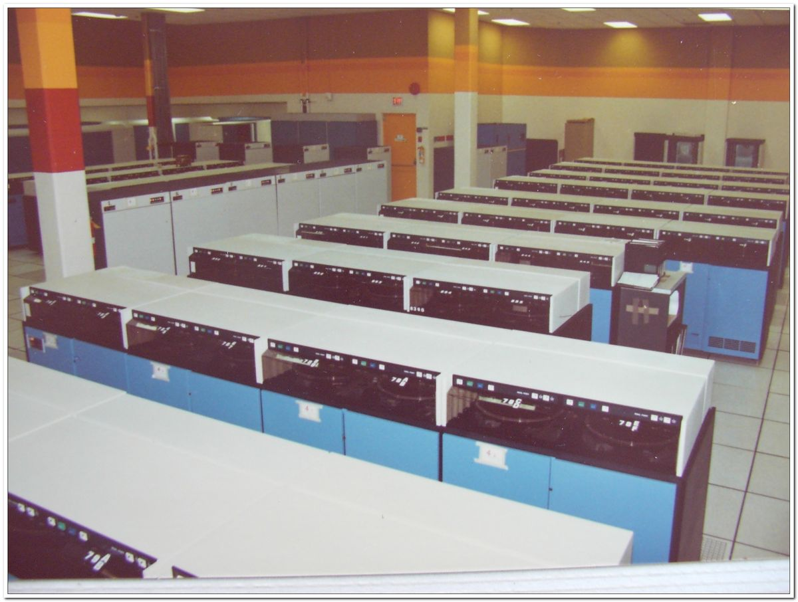
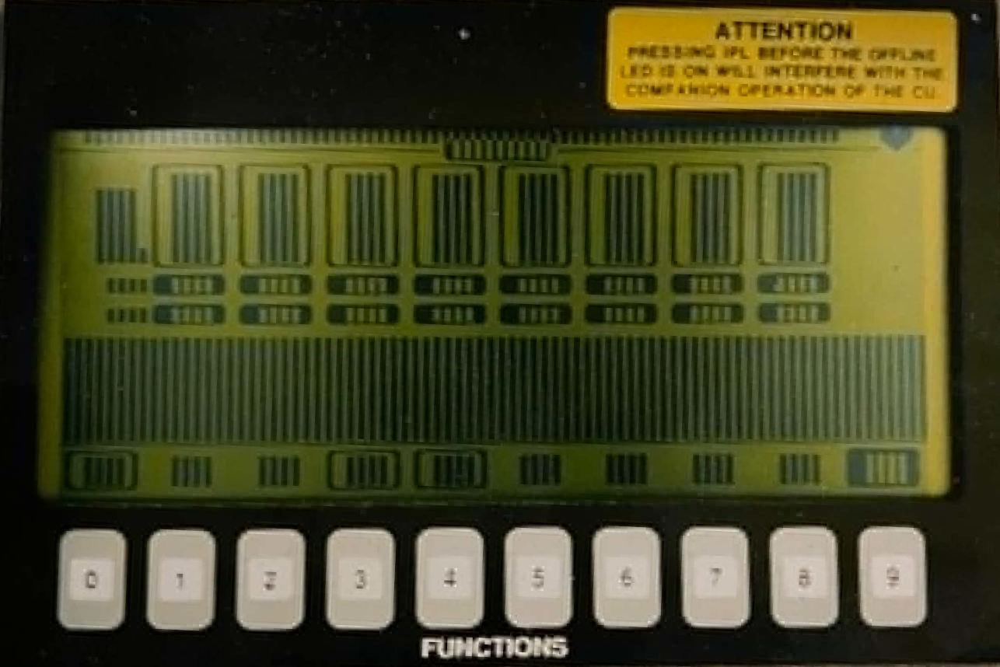
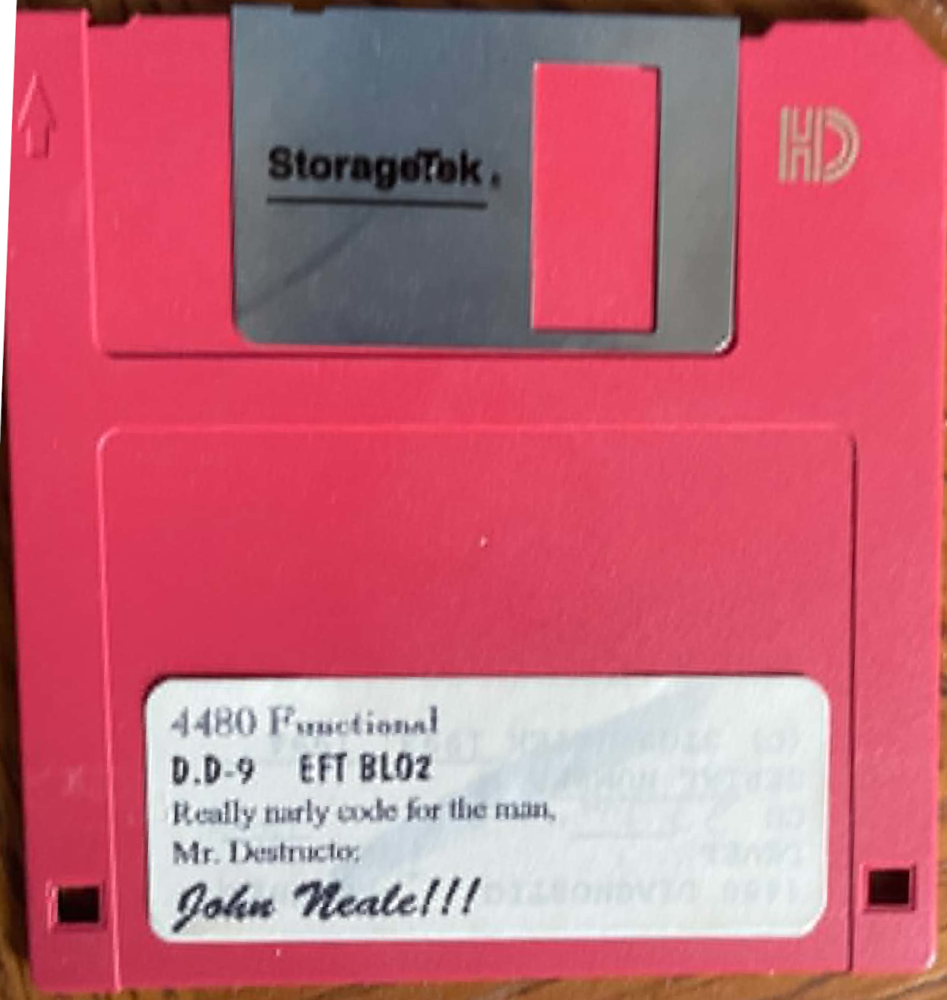
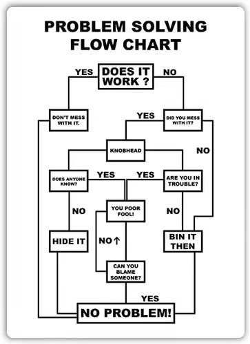

A visual collection of obsolete and rare data storage media formats.
While still in Product Evaluation, John's deep technical expertise was becoming a crucial asset. Already well-versed in IBM operating systems, his skills were further sharpened in early 1983. Following the 1982 reorganization, Jessie—one of the founders of STC and the CEO at the time—signed the paperwork to send John to the IBM education center in Chicago, where he mastered basic coding on all IBM operating systems and added machine language to his repertoire.
This foundation was essential as StorageTek was juggling multiple projects, some of which were disastrous. In the mid-1980s, the company was dealing with the 8650 disk (the big brother to the 8350). It was highly likely that the 8650, along with the ambitious but failed attempt to build their own mainframe computers, were the primary reasons for the company's 1984 bankruptcy filing. Developed using in-house specifications that were nowhere near as demanding as MILSPEC, the disk project was thrown together using a "nine women - one month" marketing concept. It was sold with promised delivery dates before it even arrived in what was Product Test at that time (before the department moved to the main campus after the bankruptcy). Field Engineers reported how frequently they crashed at customer sites, and warehouses at headquarters were full of an oversupply that simply wouldn't sell. The testing phase was just as chaotic. Bob and John Kennedy had to take the 8650 to Ball Corporation for a "shake test" because Steve Keijeski hadn't built StorageTek's own shake lab yet. The result? During the standard shipping profile test, a literal bushel basket of parts fell off the 8650.

Eventually, the focus shifted to new tape products, but the beginnings were just as chaotic. The 4480 (Cimarron) was developed first as an 18-track cartridge tape drive product offering. Here’s a laugh: the very first 4480 delivered to Product Evaluation blew up the moment they plugged it in. The prototype, built in Tape Engineering, lacked any checks to ensure the 440-volt supply power was correctly phased. By a stroke of great luck, this explosive mishap revealed that the entire LVSL4 building was incorrectly phased, leading to the entire headquarters campus being checked and other oversights corrected on the spot. Tape engineers learned their lesson quickly and added power checking to all power supplies for the 4480 and subsequent tape products.
With the hardware powered safely, the early microcode for the 4480—and later the 4490 (Silverton), a 36-track cartridge drive leveraged off the 4480—proved to be a beast to tame. One of the most intense periods involved testing microcode to fix field issues. The tape director would personally hand-deliver fresh code on a Friday evening on his way home, and John would spend the weekend relentlessly testing it to have results ready by Monday.
During this period, John also rigorously tested the STC drives against the competing IBM 3490E. Interestingly, he found a problem occurring on both the StorageTek and IBM drives. Utilizing his deep knowledge of basic coding on IBM systems, he tracked the issue all the way back into the IBM operating system itself. John made the necessary code changes and presented them directly to IBM. Impressively, IBM verified his findings and issued an official APAR (Authorized Program Analysis Report) patch for their released mainframe OS, actually acknowledging that the fix came from John!
He didn't only debug IBM operating systems, either. John insisted on testing StorageTek products against non-IBM solutions as well. One such product was SyncSort, a company offering a sort/merge solution superior to IBM's. John bought a license and installed it to test against STC products. During this process, he found a flaw in SyncSort, coded a solution himself, and presented it back to the company. The founder of SyncSort personally replied, thanking John and rewarding him with a "perpetual license free of charge." As John puts it, he "kind of had fun at STC/STK."
Normal product testing for the 4480 and 4490 was basically finished, and the 4490 was officially released in September 1992. However, a significant field issue surfaced afterward in customer feedback: the infamous "BLO"—Buffer Log Overflow. The internal buffer stack in the controller would fill up to capacity and simply crash. The tape director contacted John directly, asking if he could reproduce the issue. It took John less than three days to recreate the failure in-house on the 4480/4490 controllers for the tape engineers to debug. They solved it in both models by inserting a software "governor" to throttle the system and maintain stability.
The secret to this success was that Field Engineers (FE) never even knew it was a "BLO" issue. StorageTek didn't advertise it as such, and most code changes were released without explicitly stating what was actually fixed. Because John was able to successfully recreate the issues in-house, it made it entirely unnecessary to send experimental microcode out to failing customer sites just to "test" if a fix worked.

This solid result earned him a legendary reputation, perfectly captured on the label of a bright pink floppy disk containing the BLO2 code, where the lead microcode engineer wrote a special job title just for him: "Mr. Destructor."

Successfully fixing the BLO code was the main reason Tape Engineering made him an offer he couldn't refuse. John transitioned full-time to Tape Sustaining Engineering. To fulfill their commitment to making product quality a priority, he created the "Alpha Lab" in LSVL 4—a space designed to recreate field failures, stepping into his new role as the Advisory Software Engineer. (John even kept that famous "Problem Solving Flowchart" on his office wall!). Crucially, the BLO criteria were officially added to the lab's "lessons learned" for future products.

It was also during this period in the early 1990s that John took his career a step further. Taking courses after work at the headquarters campus, he earned his MBA. As he put it, he could already speak "computer" as well as "engineer," but he realized he was missing the language skills of the "ivory tower" to effectively communicate with upper management.
There was nothing like using lessons learned to get started on the next lines of products. The 4490's 36-track head assembly was leveraged in the new Timberline cartridge drive (released in 1993), which was developed for use in the massive PowderHorn libraries. However, it had its own share of issues—over 500 conditions were dummied off in the code as "Should Not Occur" (SNO) to save time and money, causing the machine to simply crash when they did happen. The Alpha Lab, now fully established, was ready for the challenge.